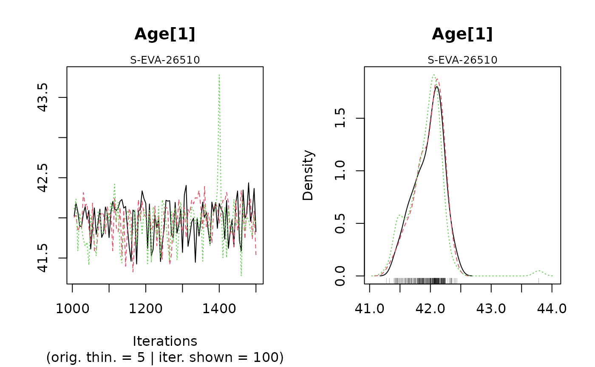
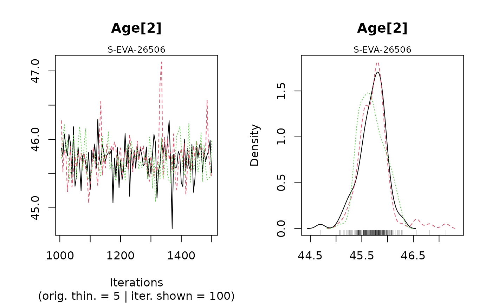
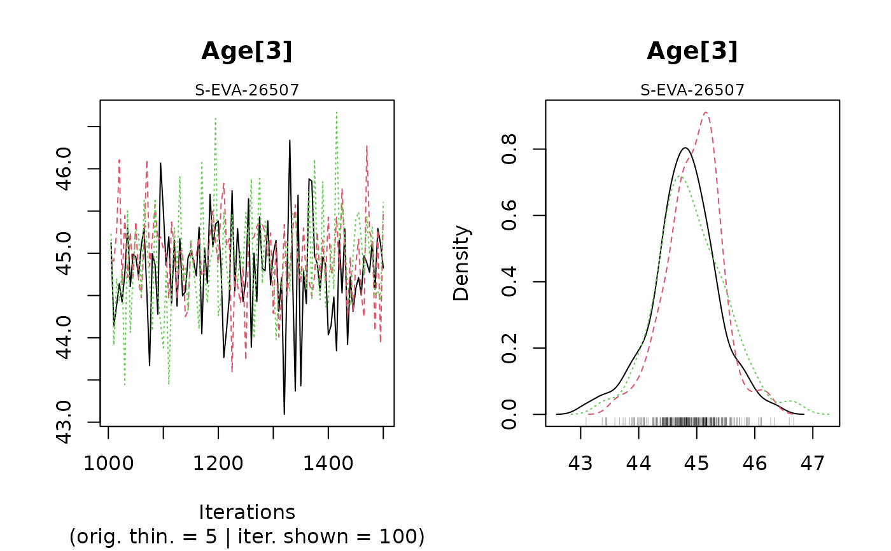
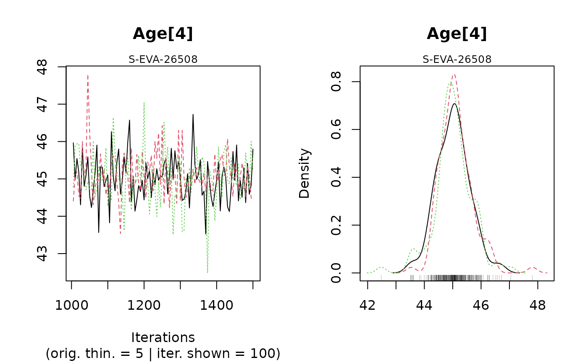
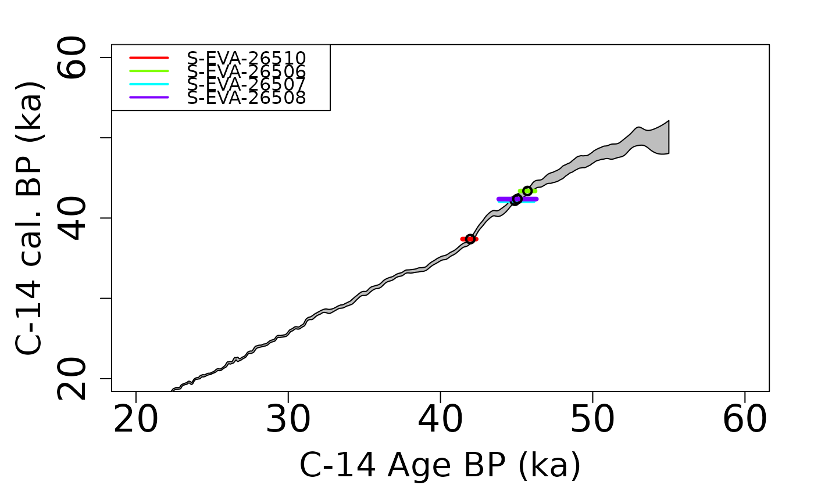
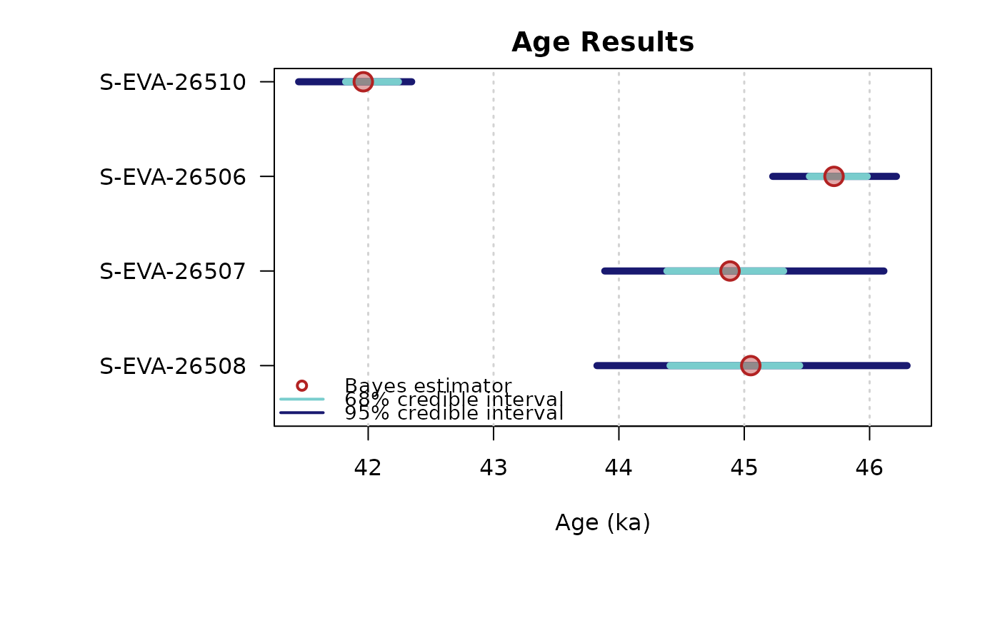
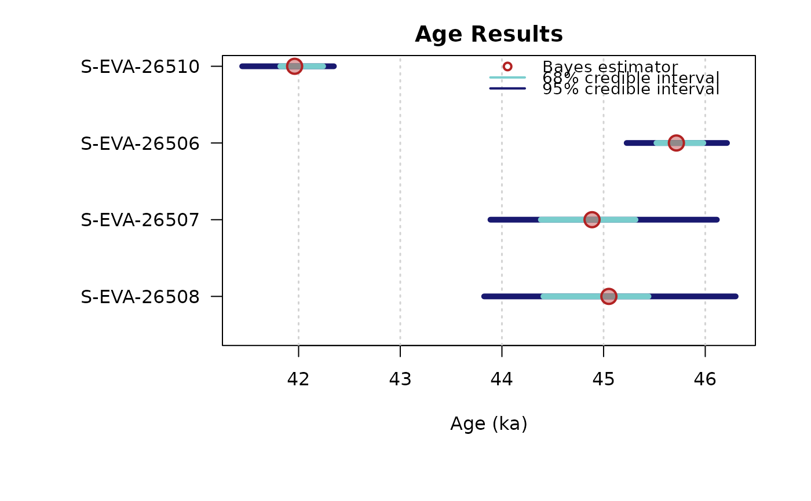

Create Age Plot
Arguments
- object
list or data.frame (required): Output as created by functions like AgeC14_Computation, which is a list of class
BayLum.list. Alternatively the function supports a data.frame as input, however, in such a case the data.frame must resemble the ages data.frame created by the computation functions otherwise the input will be silently ignored.- sample_names
character (optional): alternative sample names used for the plotting. If the length of the provided character vector is shorter than the real number of samples, the names are recycled.
- sample_order
numeric (optional): argument to rearrange the sample order, e.g.,
sample_order = c(4:1)plots the last sample first.- plot_mode
character (with default): allows to switch from displaying ages as points with lines (
"ages") for the credible intervals to densities ("density")- ...
further arguments to control the plot output, standard arguments are:
cex,xlim,main,xlab,colfurther (non-standard) arguments are:grid(TRUE/FALSE),legend(TRUE/FALSE),legend.text(character input needed),legend.posgraphics::legend,legend.cex. Additional arguments:d_scale(scales density plots),show_ages(add ages to density plots)
Value
The function returns a plot and the data.frame used to display the data
Details
This function creates an age plot showing the mean ages along with the credible intervals. The function provides various arguments to modify the plot output, however, for an ultimate control the function returns the data.frame extracted from the input object for own plots.
Author
Sebastian Kreutzer, Institute of Geography, Ruprecht-Karl-University of Heidelberg (Germany), based on code written by Claire Christophe
How to cite
Kreutzer, S., Christophe, C., 2024. plot_Ages(): Create Age Plot. Function version 0.1.5. In: Christophe, C., Philippe, A., Kreutzer, S., Guérin, G., Baumgarten, F.H., Frerebeau, N., 2024. BayLum: Chronological Bayesian Models Integrating Optically Stimulated. R package version 0.3.3.9000-13. https://CRAN.r-project.org/package=BayLum
Examples
## load data
data(DATA_C14,envir = environment())
C14Cal <- DATA_C14$C14[,1]
SigmaC14Cal <- DATA_C14$C14[,2]
Names <- DATA_C14$Names
nb_sample <- length(Names)
## Age computation
Age <- AgeC14_Computation(
Data_C14Cal = C14Cal,
Data_SigmaC14Cal = SigmaC14Cal,
SampleNames = Names,
Nb_sample = nb_sample,
PriorAge = rep(c(20,60),nb_sample),
Iter = 500,
quiet = TRUE)
#> Warning: [plot_MCMC()] 'n.iter' out of range, reset to number of observations




#>
#>
#> >> MCMC Convergence of Age parameters <<
#> ----------------------------------------------
#> Sample name Bayes estimate Uppers credible interval
#> A_S-EVA-26510 1.001 1.007
#> A_S-EVA-26506 1.013 1.055
#> A_S-EVA-26507 1.008 1.015
#> A_S-EVA-26508 1.005 1.016
#>
#>
#> ---------------------------------------------------------------------------------------------------
#> *** WARNING: The following information are only valid if the MCMC chains have converged ***
#> ---------------------------------------------------------------------------------------------------
#>
#>
#>
#> >> Bayes estimates of Age for each sample and credible interval <<
#> ------------------------------------------------------
#> Sample name Bayes estimate Credible interval:
#> A_S-EVA-26510 41.9422725989576
#> lower bound upper bound
#> at level 95% 41.466 42.312
#> at level 68% 41.81 42.223
#> ------------------------------------------------------
#> Sample name Bayes estimate Credible interval:
#> A_S-EVA-26506 45.695127613461
#> lower bound upper bound
#> at level 95% 45.1 46.333
#> at level 68% 45.509 46.041
#> ------------------------------------------------------
#> Sample name Bayes estimate Credible interval:
#> A_S-EVA-26507 44.8682082005776
#> lower bound upper bound
#> at level 95% 43.577 45.902
#> at level 68% 44.361 45.316
#> ------------------------------------------------------
#> Sample name Bayes estimate Credible interval:
#> A_S-EVA-26508 45.0361927849055
#> lower bound upper bound
#> at level 95% 43.959 46.023
#> at level 68% 44.473 45.401
#>
#> ------------------------------------------------------


## plot output
plot_Ages(Age)

#> SAMPLE AGE HPD68.MIN HPD68.MAX HPD95.MIN HPD95.MAX ALT_SAMPLE_NAME
#> 1 S-EVA-26510 41.94227 41.810 42.223 41.466 42.312 NA
#> 2 S-EVA-26506 45.69513 45.509 46.041 45.100 46.333 NA
#> 3 S-EVA-26507 44.86821 44.361 45.316 43.577 45.902 NA
#> 4 S-EVA-26508 45.03619 44.473 45.401 43.959 46.023 NA
#> AT
#> 1 4
#> 2 3
#> 3 2
#> 4 1
## plot output
plot_Ages(Age, plot_mode = "density")
 #> SAMPLE AGE HPD68.MIN HPD68.MAX HPD95.MIN HPD95.MAX ALT_SAMPLE_NAME
#> 1 S-EVA-26510 41.94227 41.810 42.223 41.466 42.312 NA
#> 2 S-EVA-26506 45.69513 45.509 46.041 45.100 46.333 NA
#> 3 S-EVA-26507 44.86821 44.361 45.316 43.577 45.902 NA
#> 4 S-EVA-26508 45.03619 44.473 45.401 43.959 46.023 NA
#> AT
#> 1 4
#> 2 3
#> 3 2
#> 4 1
#> SAMPLE AGE HPD68.MIN HPD68.MAX HPD95.MIN HPD95.MAX ALT_SAMPLE_NAME
#> 1 S-EVA-26510 41.94227 41.810 42.223 41.466 42.312 NA
#> 2 S-EVA-26506 45.69513 45.509 46.041 45.100 46.333 NA
#> 3 S-EVA-26507 44.86821 44.361 45.316 43.577 45.902 NA
#> 4 S-EVA-26508 45.03619 44.473 45.401 43.959 46.023 NA
#> AT
#> 1 4
#> 2 3
#> 3 2
#> 4 1